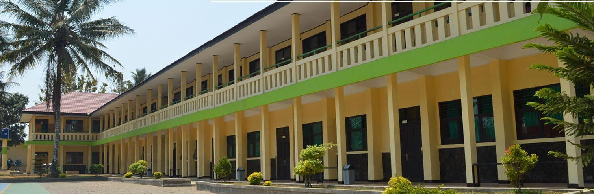

SMK Negeri 1 Cibadak didirikan pada tanggal 12 Juni 1965 berdasarkan Surat Keputusan Menteri P & K Republik Indonesia No. 69/Dirpl/65 dengan nomenklatur Sekolah Teknologi Menengah Pertanian atau STM Pertanian. SMK Negeri 1 Cibadak merupakan sekolah pertanian negeri pertama di Kabupaten Sukabumi di bawah naungan Depatemen Pendidikan dan Kebudayaan. Saat pertama berdiri, sekolah berlokasi di Bojong Masjid Desa Cibadak. Saat itu dengan jumlah siswa yang relatif sedikit, tempat belajar masih menumpang di sebuah Madrasah di Bojong Masjid Cibadak selama kurang lebih 3 tahun. Selanjutnya pada tahun 1971 tempat belajar pindah ke gedung pertunjukan budaya Tionghoa di Jalan Perintis Kemerdekaan Cibadak di samping SD Negeri 5 dan SD Negeri 6 Cibadak. Sekolah berlokasi di sana hingga tahun 1974/1975.
SMK Negeri 1 Cibadak didirikan pada tanggal 12 Juni 1965 berdasarkan Surat Keputusan Menteri P & K Republik Indonesia No. 69/Dirpl/65 dengan nomenklatur Sekolah Teknologi Menengah Pertanian atau STM Pertanian. SMK Negeri 1 Cibadak merupakan sekolah pertanian negeri pertama di Kabupaten Sukabumi di bawah naungan Depatemen Pendidikan dan Kebudayaan. Saat pertama berdiri, sekolah berlokasi di Bojong Masjid Desa Cibadak. Saat itu dengan jumlah siswa yang relatif sedikit, tempat belajar masih menumpang di sebuah Madrasah di Bojong Masjid Cibadak selama kurang lebih 3 tahun. Selanjutnya pada tahun 1971 tempat belajar pindah ke gedung pertunjukan budaya Tionghoa di Jalan Perintis Kemerdekaan Cibadak di samping SD Negeri 5 dan SD Negeri 6 Cibadak. Sekolah berlokasi di sana hingga tahun 1974/1975.
GALLERY

